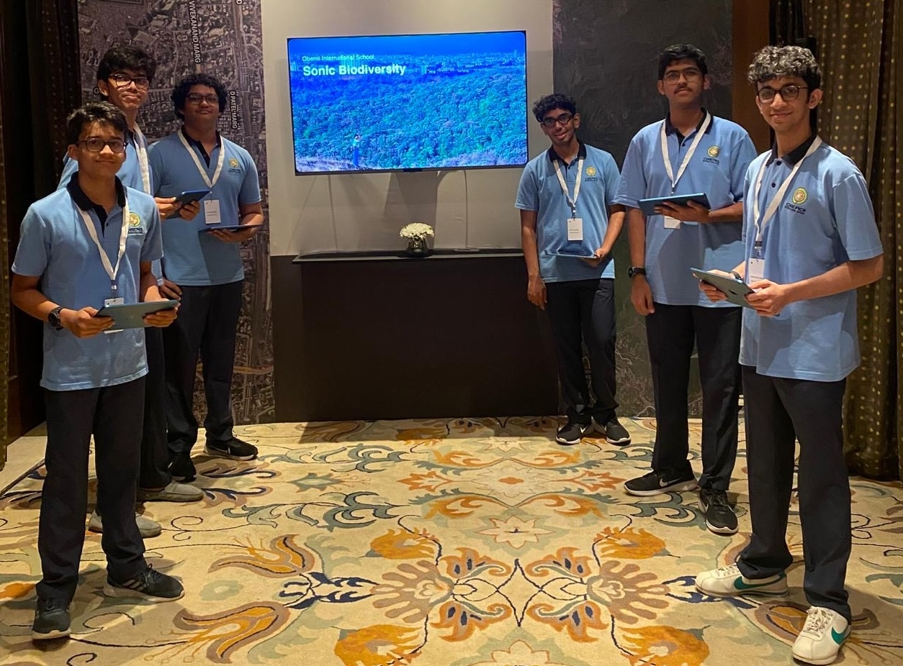
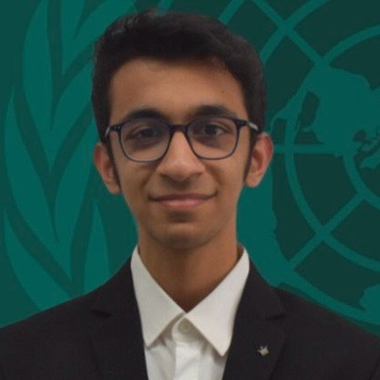
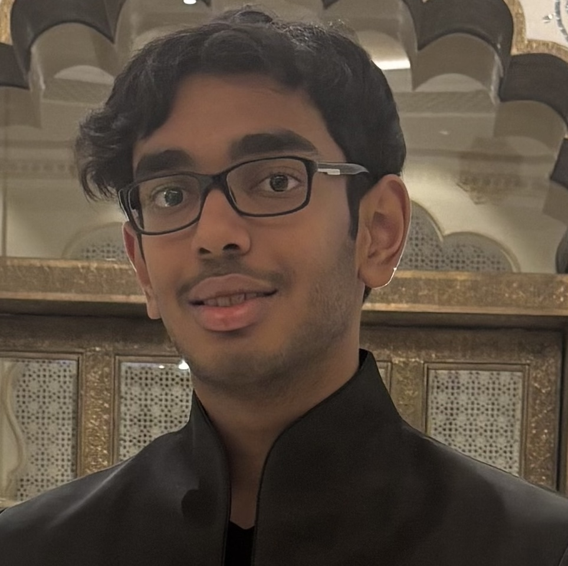
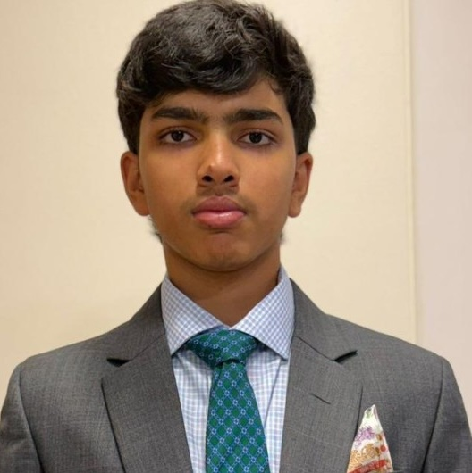
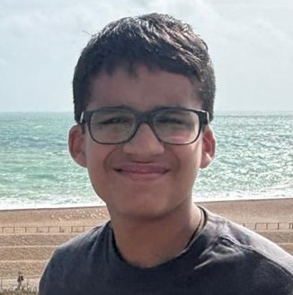

The Executive Board
The Founders of the Tech Council are visionaries who drive our community forward with unwavering passion and expertise. They are committed to fostering a culture of innovation, continuously pushing the limits of what’s possible in technology. Through their leadership, they inspire collaboration, fuel progress, and set the standard for excellence in every endeavor. With a relentless focus on growth and impact, they lead by example, shaping the future of tech for generations to come.

Executive Board

Aryan Dodeja
Role: President
Hi, I'm Aryan. I'm passionate about tech (especially AI) and STEM, always exploring how ideas turn into real solutions. Beyond academics, I'm an active debater, where clear thinking and strategy matter just as much as in chess, a game I enjoy for its mental depth. Technology fascinates me because there's always more to learn.

Darsh Choudhary
Role: Vice President
Hi, I'm Darsh. I'm passionate about coding and mathematical concepts, constantly developing software and algorithms. Outside of tech, I'm a huge cricket fan, and also have a knack for strategic analysis, whether it's optimizing code or outsmarting opponents in a game of cards. Whether it's analyzing data or brainstorming the next big thing in tech, I'm always eager to blend my skills with my interests to create something impactful.

Sayujya Dalal
Role: Secretary
Hi, I'm Sayujya. I'm really passionate about machine learning, and I even built my own AI assistant, ClauseIQ, which started as a simple idea and turned into something I'm genuinely proud of. I also love quantitative analysis, finance, and global politics. I find constructive debate to be one of the best platforms for speech in today's day and age. I hope to use technology in these topics too.

Viraj Rane
Role: Director of Communications
Hi, I'm Viraj. I love tech, squash, and doom scrolling. I'm passionate about engineering, woodworking, and building practical projects using IoT and hands-on methods like my robotic arm, 3D printer, taser, and ionic thruster. Overall, I enjoy blending my imagination with technological tools available to me in order to bring my ideas to life.

Vardhan Gaur
Role: Head of STEM
Hi, I'm Vardhan. I am passionate about robotics, technology, and mathematics. I love working with formulas, creating innovative solutions, and solving hard problems. Outside of this, I play competitive football and am a huge fan of FC Barcelona. I'm driven by the idea that the right blend of creativity and technical thinking can solve problems that truly matter.

Nevaan Vig
Role: Head of Innovation
Hi, I'm Nevaan. I love exploring how technology can be integrated into our day-to-day lives, working on projects such as a mouse for disabled individuals, and an app that helps people build friendships and connections within their local communities. I also am passionate about the advent of art in technology, and love producing music and editing photos in my free time. Whether it's helping resolve any technical issue, or knowing which Macintosh was released in which year, I'm your guy for all things technology!